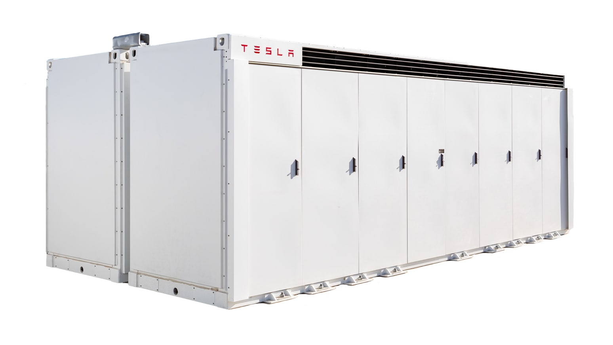
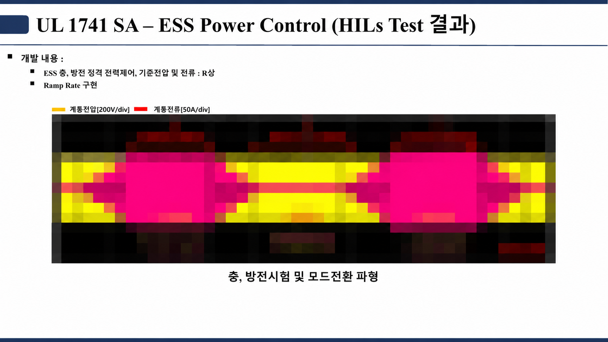
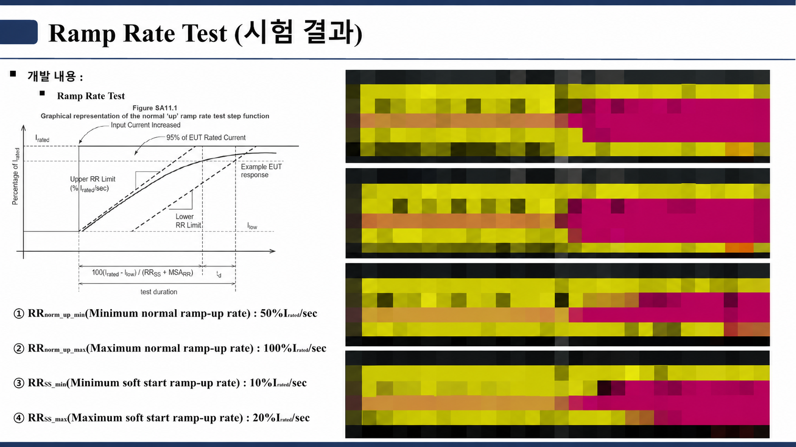
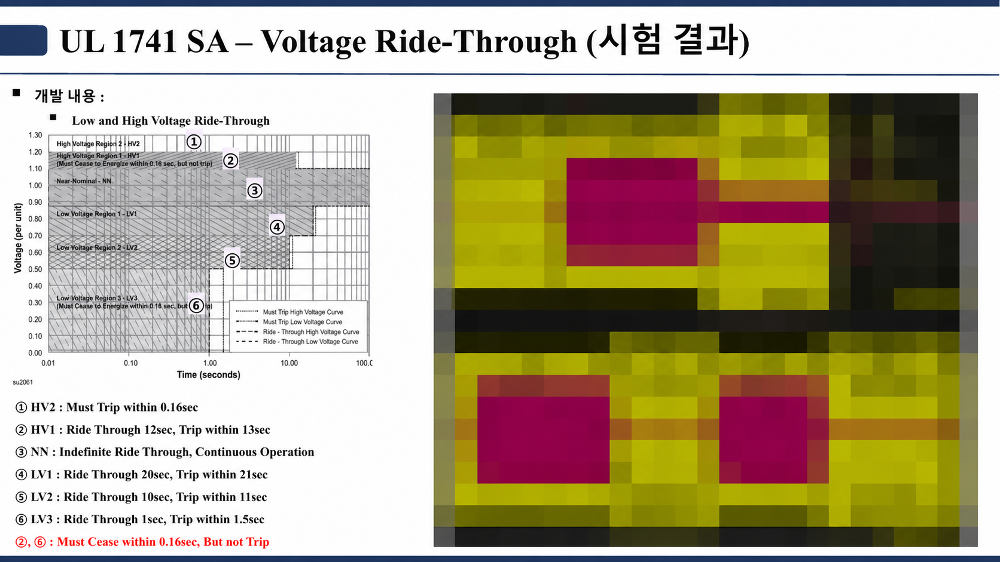
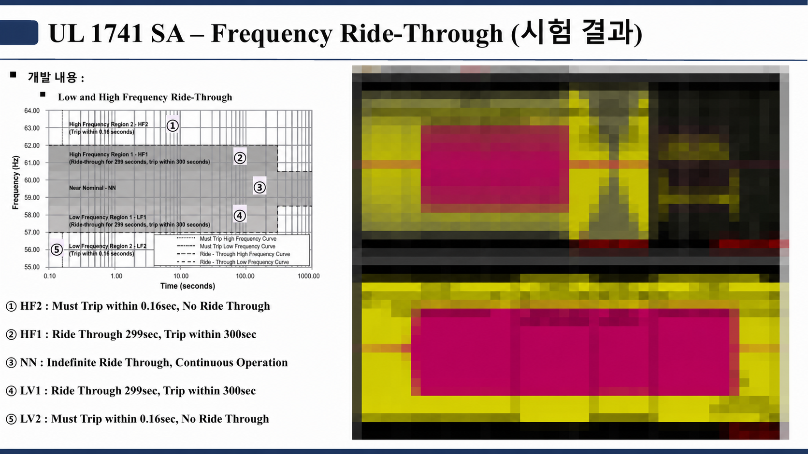
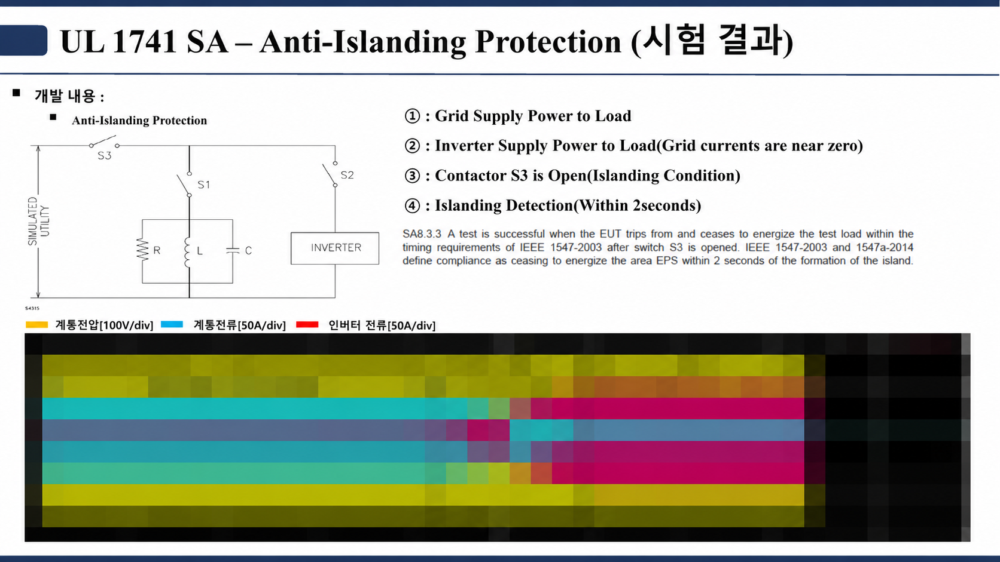

02 / Energy Storage System
ESS
태양광·ESS·연료전지 인버터의 계통연계 기능을 UL 1741 SA 항목 기준으로 HILS에서 시험한 기록입니다.
시스템 아키텍처
태양광·연료전지DC 발전원
→
DC/DC전압 변환
→
DC Bus전력 결합
→
PCSDC ↔ AC
→
계통·부하AC
배터리에너지 저장
↔양방향 DC/DC충전·방전
↔DC Bus
제어기·보호: 전압·전류·주파수 상태를 확인하고 충전·대기·방전 상태, 계통 이상 시 보호 동작과 복귀 조건을 관리합니다.
제품 참고 이미지

저장과 계통연계
ESS는 전력을 배터리에 저장했다가 다시 공급합니다. PCS가 DC와 AC 사이 전력 흐름을 제어하고, 발전원·계통·부하 상태에 따라 충전과 방전을 바꿉니다.
ESS를 이루는 요소
배터리
셀·모듈·랙 단위로 에너지를 저장합니다. 에너지 용량(MWh)이 방전 지속시간을 정합니다.
BMS
전압·온도 등 배터리 상태를 확인하고, 과충전·과방전 등 안전 조건을 관리합니다.
PCS
배터리의 DC 전력과 계통·부하의 AC 전력 사이를 양방향으로 변환하고 충전·방전을 제어합니다.
EMS
운전 목적에 맞춰 충전·방전 계획과 출력 지령을 내리고, PCS·BMS 상태를 모아 봅니다.
계통연계 운전 순서
상태 확인
계통 전압·주파수와 배터리 상태로 충전·대기·방전 가능 여부를 판단.
전력 제어
출력 지령 변경 시 전력·전류 변화율(Ramp Rate)과 DC Bus 전압 추종.
보호·복귀
계통 이상·단독운전에서 운전 유지 / 출력 정지 / trip / 재연계 시퀀스.
업무
- 제어 보드를 실제 I/O·PWM으로 HILS에 연결하고, 센서 스케일·I/O 지연·보호 입력 우선순위·모드 전환 순서를 실제 제어기와 맞췄습니다.
- Volt-Var, Volt-Watt, Frequency-Watt, Ramp Rate, LVRT/HVRT, Anti-Islanding, 정전·재연계를 시험 시나리오로 만들었습니다.
- 곡선형 기능은 시작점·종료점·중간값과 상승·하강 방향을 나눠 돌리고, 저전압에서 전류 제한에 먼저 걸리는 경우를 따로 확인했습니다.
- 로직을 고치면 같은 시나리오를 다시 돌려 변경 전후를 비교했습니다.
시험 결과 슬라이드

충·방전 정격 전력 제어와 모드 전환.

정상 50~100 %Irated/s, soft-start 10~20 %Irated/s.

HV1·HV2·LV1~LV3 영역별 유지·정지·trip 시간.

HF1·LF1 299 s 유지, HF2·LF2 0.16 s 이내 trip.

S3 개방 후 2 s 이내 검출·정지.
시스템도는 일반적인 계통연계 ESS 구성입니다. 계측 파형은 모자이크 처리했고, 고객·프로젝트 정보와 제어 파라미터는 싣지 않았습니다. 시험 방법은 ESS HILS 기록에 있습니다.
참고: U.S. Department of Energy — BESS Components and Functions